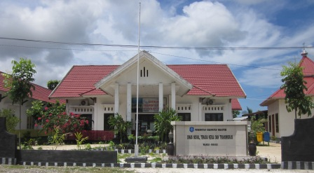

PEMERINTAH KABUPATEN WAKATOBI
Dinas Sosial
Kabupaten Wakatobi
Informasi pelayanan, program, dan kegiatan sosial untuk masyarakat Kabupaten Wakatobi.
Kenali Dinas Sosial ↓WAKATOBI · SULAWESI TENGGARA
PUSAT AKSES MASYARAKAT
Apa yang ingin kamu cari?
Pilih kebutuhanmu untuk menuju informasi yang sesuai.
PROFIL INSTANSI
Melayani dan memperkuat kesejahteraan sosial.
Dinas Sosial Kabupaten Wakatobi membantu Bupati melaksanakan urusan pemerintahan di bidang sosial yang menjadi kewenangan daerah.
Pelaksanaan tugas meliputi perumusan dan pelaksanaan kebijakan sosial, evaluasi, pelaporan, serta administrasi dinas.
Dasar hukum organisasi ↗LAYANAN SOSIAL
Informasi layanan
Dinas Sosial Kabupaten Wakatobi menyelenggarakan dan memfasilitasi pelayanan kesejahteraan sosial. Berikut gambaran bidang layanan, kelompok sasaran, serta informasi awal yang perlu diketahui masyarakat.
01 · JAMINAN SOSIALJaminan Kesehatan (PBI-JK)
Program Jaminan Kesehatan Nasional bagi masyarakat yang memenuhi kriteria sebagai Penerima Bantuan Iuran. Iuran peserta PBI dibayarkan oleh pemerintah sesuai ketentuan yang berlaku.
Informasi yang dapat diakses- Pengecekan status kepesertaan bantuan iuran.
- Informasi pengusulan atau pembaruan data kesejahteraan sosial.
- Arahan tindak lanjut apabila kepesertaan tidak aktif atau terdapat perubahan data.
Pengusulan dan perubahan data mengikuti proses verifikasi serta ketentuan instansi berwenang. 02 · REHABILITASI SOSIALRehabilitasi dan alat bantu sosial
Pelayanan sosial bagi individu atau kelompok yang membutuhkan dukungan untuk memulihkan dan mengembangkan fungsi sosial agar dapat menjalani kehidupan secara layak.
Kelompok sasaran dan bentuk layanan- Anak yang membutuhkan perlindungan dan pendampingan sosial.
- Lanjut usia yang membutuhkan dukungan kesejahteraan sosial.
- Penyandang disabilitas, termasuk informasi permohonan alat bantu sesuai ketersediaan program.
- Kelompok rentan yang membutuhkan rujukan atau penanganan sosial.
Permohonan dapat disampaikan kepada Bidang Rehabilitasi Sosial dengan dokumen pendukung sesuai jenis kebutuhan. 03 · PERLINDUNGAN SOSIALPenanganan kedaruratan dan bencana
Koordinasi penanganan awal bagi masyarakat yang mengalami kondisi darurat sosial maupun terdampak bencana, sesuai tugas dan kewenangan Dinas Sosial.
Ruang lingkup informasi- Pelaporan warga yang membutuhkan penanganan sosial segera.
- Koordinasi bantuan sosial bagi warga terdampak bencana.
- Informasi penjangkauan, pendataan, dan rujukan kepada pihak terkait.
Masyarakat dapat melapor melalui pemerintah desa/kelurahan atau menghubungi Dinas Sosial untuk koordinasi lebih lanjut. 04 · PEMBERDAYAAN SOSIALPemberdayaan masyarakat
Upaya penguatan kapasitas masyarakat dan potensi sumber kesejahteraan sosial untuk mendukung kemandirian serta peningkatan kesejahteraan sosial.
Ruang lingkup kegiatan- Informasi kegiatan pemberdayaan dan penguatan kapasitas sosial.
- Pengembangan partisipasi masyarakat dalam penyelenggaraan kesejahteraan sosial.
- Koordinasi dengan unsur masyarakat dan lembaga sosial sesuai program yang berjalan.
Jenis kegiatan dan kesempatan partisipasi menyesuaikan program serta kebijakan yang sedang dilaksanakan. Informasi pada halaman ini merupakan gambaran umum layanan. Persyaratan administrasi, jadwal, ketersediaan bantuan, dan keputusan penerima manfaat mengikuti hasil verifikasi serta ketentuan resmi yang berlaku. Lihat bagian FAQ atau hubungi Dinas Sosial Kabupaten Wakatobi untuk informasi lebih lanjut.
PANDUAN MASYARAKAT
Mulai dari informasi yang tepat.
Setiap jenis layanan dapat memiliki ketentuan berbeda. Gunakan panduan awal ini sebelum menghubungi petugas.
01Pahami kebutuhanmu
Pilih informasi layanan atau bantuan sosial yang paling sesuai dengan kondisi yang ingin ditanyakan.
Periksa informasi dan persyaratan
Baca keterangan yang tersedia. Persyaratan akhir tetap perlu dikonfirmasi kepada petugas berwenang.
Hubungi atau sampaikan pertanyaan
Gunakan kontak yang tercantum atau kirim masukan melalui halaman pengaduan.
Informasi pada halaman ini merupakan panduan umum, bukan keputusan kelayakan atau jaminan penerimaan bantuan.
BUKU INFORMASI DAN PERTANYAAN UMUM
FAQ Dinas Sosial Kabupaten Wakatobi
Dokumen ini disusun sebagai panduan informasi publik bagi masyarakat Kabupaten Wakatobi mengenai prosedur pelayanan, persyaratan administrasi, serta mekanisme pengajuan program kesejahteraan sosial di lingkungan Dinas Sosial Kabupaten Wakatobi.
Alamat: Kompleks Perkantoran Baru Motika, Jl. Laruku No. 15, Mandati III, Wangi-Wangi Selatan.
I. Program Bantuan Sosial (PKH, BPNT / Sembako, PBI-JK) — Bagaimana prosedur pendaftaran atau pengusulan penerima Bantuan Sosial?
Ketentuan Umum: Calon penerima bantuan sosial wajib tercantum di dalam Data Terpadu Kesejahteraan Sosial (DTKS) atau Data Tunggal Sosial Ekonomi Nasional (DTSEN).
Mekanisme Pengajuan:
- Pemohon melapor kepada pihak Pemerintah Desa atau Kelurahan domisili.
- Melalui Musyawarah Desa/Kelurahan (Musdes/Muskel), usulan diverifikasi secara faktual.
- Pengusulan diinput ke dalam aplikasi SIKS-NG oleh operator resmi Dinas Sosial.
Persyaratan Berkas:
- Fotokopi Kartu Tanda Penduduk (KTP) / Identitas yang sah.
- Fotokopi Kartu Keluarga (KK).
- Surat Keterangan Tidak Mampu (SKTM) yang dikeluarkan oleh Kantor Desa/Kelurahan.
Bagaimana tata cara pengecekan status kepesertaan Bantuan Sosial?
Secara Elektronik (Online): Mengakses portal resmi Kementerian Sosial Republik Indonesia melalui cekbansos.kemensos.go.id atau melalui aplikasi resmi Cek Bansos.
Secara Langsung (Offline): Menghadiri layanan Pusat Kesejahteraan Sosial (Puskesos) di Kelurahan/Desa atau mendatangi Kantor Dinas Sosial Kabupaten Wakatobi dengan membawa identitas diri.
II. Layanan Kesehatan (BPJS PBI / JAMKESDA) — Bagaimana persyaratan pengaktifan atau pengusulan BPJS Kesehatan PBI?
Program Jaminan Kesehatan bagi Penerima Bantuan Iuran (PBI) diperuntukkan bagi warga masyarakat kurang mampu yang iurannya dibebankan kepada anggaran pemerintah.
Persyaratan Administrasi:
- Melampirkan fotokopi KTP dan KK seluruh anggota keluarga dalam satu kartu keluarga.
- Terdaftar atau telah diajukan ke dalam basis data DTKS.
- Membawa Surat Keterangan Rawat Inap atau Surat Rujukan dari fasilitas kesehatan tingkat pertama (Puskesmas/Rumah Sakit) apabila pengajuan bersifat mendesak untuk tindakan medis.
III. Layanan Rehabilitasi Sosial dan Alat Bantu — Bagaimana tata cara permohonan bantuan alat bantu bagi penyandang disabilitas dan lanjut usia?
Persyaratan Administrasi:
- Surat Permohonan resmi yang ditandatangani oleh pemohon serta diketahui dan disetujui oleh Lurah atau Kepala Desa setempat.
- Fotokopi KTP dan Kartu Keluarga (KK) penerima manfaat.
- Dokumentasi foto kondisi fisik penerima manfaat terkini yang menunjukkan kebutuhan spesifik atas alat bantu (contoh: kursi roda, tongkat, alat bantu dengar).
Prosedur Penyerahan: Berkas permohonan diserahkan langsung kepada Bidang Rehabilitasi Sosial di kantor Dinas Sosial Kabupaten Wakatobi.
IV. Surat Rekomendasi Sosial dan Perizinan — Bagaimana persyaratan penerbitan Surat Rekomendasi Sosial untuk Beasiswa atau Program Indonesia Pintar (PIP)?
Persyaratan Administrasi:
- Surat Keterangan Tidak Mampu (SKTM) asli dari Kantor Desa/Kelurahan.
- Fotokopi KTP Orang Tua/Wali dan Kartu Keluarga (KK).
- Bukti keterdaftaran dalam DTKS atau surat pengantar resmi dari satuan pendidikan asal.
V. Penanganan Kasus Kedaruratan Sosial — Apa langkah yang harus diambil apabila menemukan Pemerlu Pelayanan Kesejahteraan Sosial (PPKS) di ruang publik?
Contoh: anak terlantar, lanjut usia terlantar, atau Orang Dengan Gangguan Jiwa.
Prosedur Pelaporan: Masyarakat diimbau untuk segera melaporkan temuan tersebut kepada:
- Kantor Dinas Sosial Kabupaten Wakatobi (Kompleks Perkantoran Motika, Mandati III).
- Aparat Pemerintah Desa/Kelurahan setempat, Satuan Polisi Pamong Praja (Satpol PP), atau pihak Kepolisian terdekat.
Tindak Lanjut: Petugas berwenang akan menerbitkan Berita Acara Serah Terima untuk ditindaklanjuti secara administratif guna proses rehabilitasi sosial atau rujukan ke balai/panti sosial terkait.
Informasi ini bersumber dari dokumen yang disampaikan langsung oleh Dinas Sosial Kabupaten Wakatobi.
BERITA & KEGIATAN
Kabar dari Wakatobi
Informasi dan pemberitaan mengenai kegiatan serta pelayanan sosial.

JAMINAN KESEHATANPeninjauan kembali kepesertaan PBI-JK
Kepala Dinas Sosial Wakatobi, La Yijo, menanggapi penonaktifan peserta PBI-JK yang rencananya akan ditinjau kembali.
Baca berita ↗ LAYANAN DISABILITASKerja sama layanan disabilitas dengan Pengadilan Agama Wangi-Wangi
Kunjungan dan pembahasan draf kerja sama untuk meningkatkan akses layanan hukum dan sosial bagi penyandang disabilitas.
Baca sumber berita ↗ RESPONS KEDARURATANBantuan bagi warga terdampak kebakaran
Pemberitaan mengenai penyaluran bantuan logistik darurat bagi warga terdampak kebakaran di Wakatobi.
Baca sumber berita ↗ STRUKTUR ORGANISASI
Susunan organisasi Dinas Sosial
Bagan disusun berdasarkan Peraturan Bupati Wakatobi Nomor 56 Tahun 2022. Nama pejabat aktif tidak ditampilkan karena memerlukan verifikasi terbaru.
Lihat Perbup Nomor 56 Tahun 2022 ↗Memuat susunan organisasi…
Bagan menunjukkan susunan unit berdasarkan regulasi, bukan daftar pejabat yang sedang menjabat.